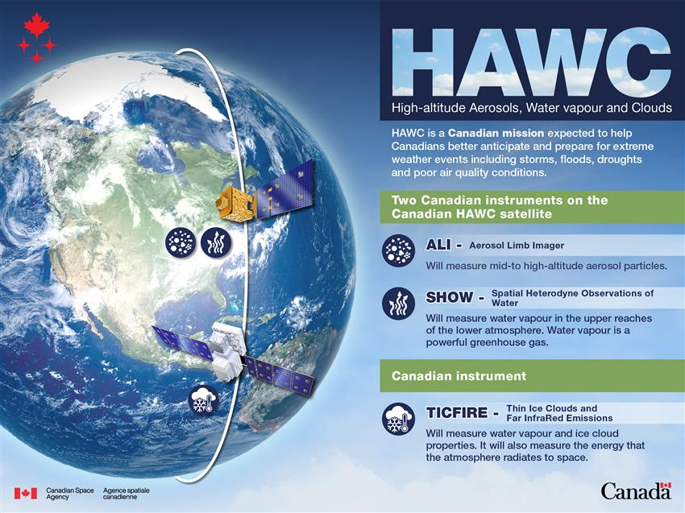
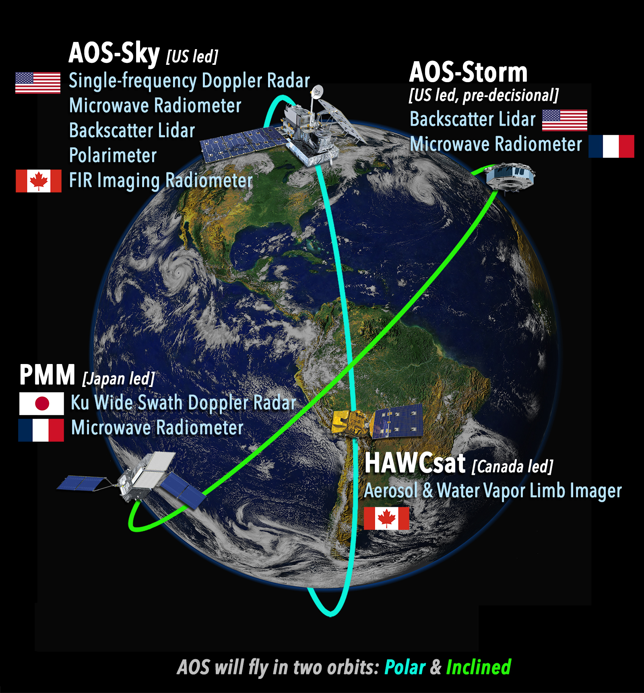
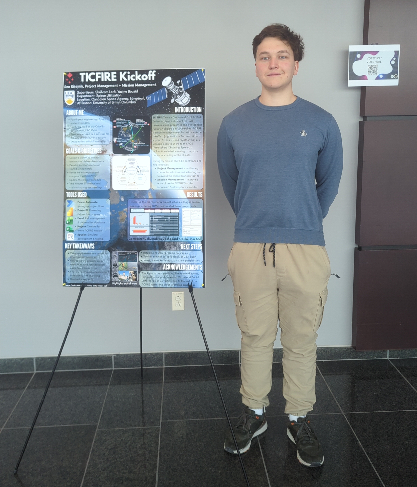
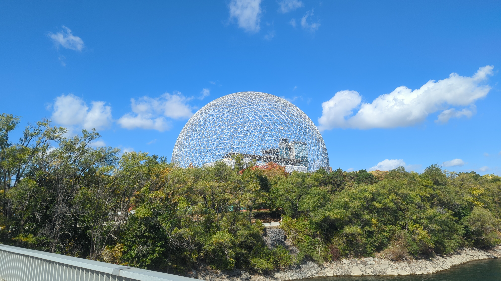
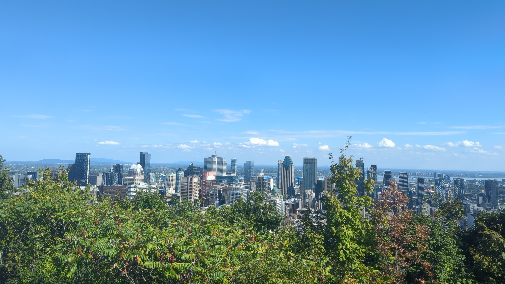

CSA Internship
I had the opportunity to work at the CSA’s headquarters in Montreal as a Mission Management Intern from September to December 2025. It was a very fun and memorable experience, and certainly one I would repeat.
I worked on TICFIRE, an instrument that will measure atmospheric radiation and discern between ice and water clouds once it is launched to NASA’s AOS (Atmosphere Observing System).


Ice and water clouds can be distinguished by how they refract and absorb particular wavelengths of light. The intern before me developed a neural net that attempted to do this using real instrument data. It was fairly accurate, but the confusion matrix did have non negligible off diagonal entries; cloud classification is a difficult problem, given they come in irregular shapes, varying temperatures, and can even be a mix of both water and ice.
I was given the option to continue improving this model, but I went for the other choice: developing the simulator.
What I did
When I started, TICFIRE was in its very early stages, not even having left Phase A yet. there were several meeting chains to initiate with the project kickoff - one with each of the competing contractors, and one with the university collaborators.
My role was twofold:
- For the project management team, I took minutes of contractor meetings, created tools to track deliverables and RIDs, and organized strategic documents;
- for the science team, I optimized physics and performance for TICFIRESim, designed an interface to use various radiative transfer frameworks from different servers, and compared the expected outputs with readings of the microbolometer in the lab.
In the end I made and presented this poster to CSA employees including Lisa Campbell, the current president.

Montreal
I really loved the city; the seasons are much more pronounced and distinct, the infrastructure facilitates a healthy lifestyle, and it feels alive and real in a way that Vancouver doesn’t. If it wasn’t uninhabitable in the winter months, or French, I’d seriously consider moving there after graduating.

[I also went to Quebec City for a weekend]
